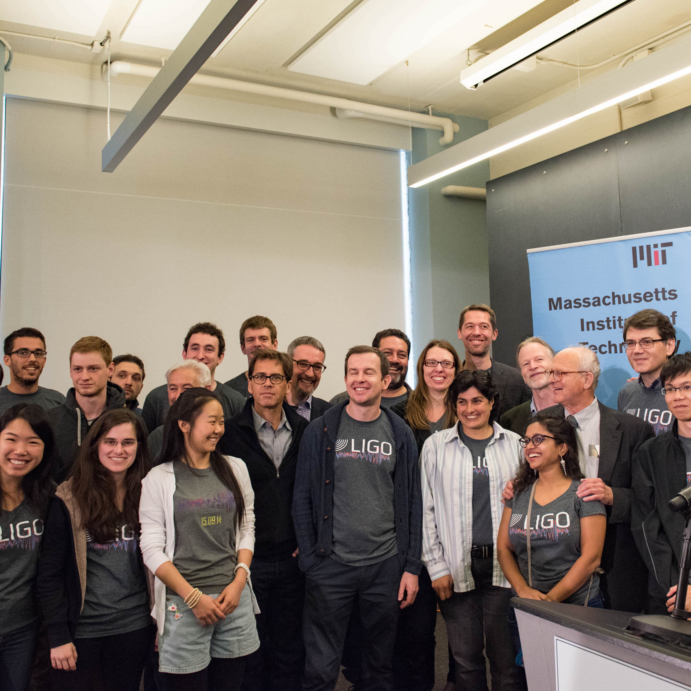

ASTRONOMICAL INSTRUMENTATION AT COLUMBIA
I work on astronomical instrumentation projects in Professor David Schiminovich's lab. We focus on instruments that can probe for features of the circumgalactic medium (CGM). I currently work on CHaS and FIREBall. The Circumgalactic H-Alpha Spectrograph (CHaS) is a ground based spectrograph based at the MDM observatory in Arizona, and I have mostly worked on its electronic components. FIREBall is a multi-object UV balloon spectrograph, and I have been awarded NASA's FINESST grant to develop new detectors that will potentially use hexagonal Boron Nitride (hBN), a large-bandgap material that could have better quantum efficiency than our current detectors.SEE CHAS POSTER



ATOMIC, MOLECULAR AND OPTICAL PHYSICS AT YALE
I spent two years and wrote my senior thesis in Professor David DeMille's AMO lab at Yale. His lab uses the polarizability of diatomic molecules to perform precision measurements. From the three projects I worked on in his lab, my favorite one was upgrading a 3D printed laser shutter prototype originally developed by Grace Zhang at MIT. I modified the shutter blade using 3D modeling and redesigned its driving circuit to block light faster than the original prototype. The original shutter supported much lower laser powers than what we used in the lab, so I upgraded the model to support 14 times more power than previously, enabling the implementation of a few shutters in our laser cooling experiment. The other projects included building an external cavity diode laser and implementing a laser locking system.SEE SHUTTER POSTER


PARTICLE PHYSICS AT CERN
I spent my first summer in college with Yale Professor Sarah Demers’ particle physics group at CERN working in the ATLAS experiment. I wrote ROOT programs in C++ and Python in order to extract information from different sets of Monte Carlo simulations, so we could compare diboson background to the decay of the Higgs boson to W and Z bosons. I inspected the behavior of kinematic variables from decay products of diboson jets and examined the cross sections expected from these decay modes. My time at CERN was sponsored by the Alan S. Tetelman Fellowship for International Research in the Sciences.READ ABOUT IT